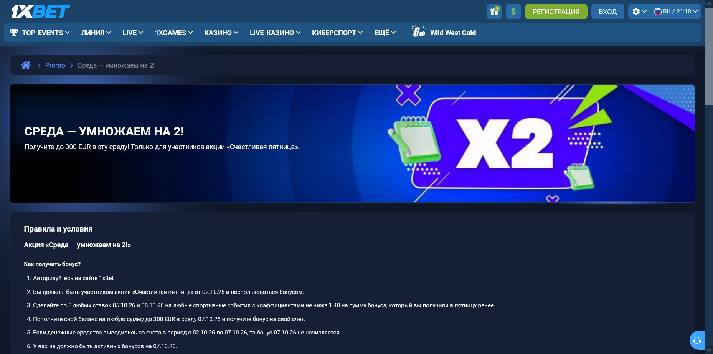

Акция «Среда — умножаем на 2!» в 1xBet: кто получает удвоение и как его отыграть
Бонус среда x2 1xBet — акция «Среда — умножаем на 2!»: по правилам, снятым 03.10.2026, выпуск 02–07.10.2026 даёт 100% от пополнения 07.10, но не более 300 EUR. Получить его может только участник «Счастливой пятницы» 02.10, сделавший по 5 ставок 05.10 и 06.10; доступность для аккаунта из Москвы не подтверждена.
Статус выпуска 02–07.10.2026 на дату проверки
Среда ×2 в 1xBet на 03.10.2026 описана правилами одного выпуска: акция действует только с 02.10.2026 до 07.10.2026, а пополнение для начисления бонуса нужно сделать в среду 07.10. От проверки до конца выпуска оставалось 4 дня, поэтому после 07.10 эти условия описывают уже завершённое предложение. Первоисточник — правила «Среда — умножаем на 2!», открытые без входа в аккаунт.

Бонус среды по тексту правил доступен «игрокам 1xBet всех стран», но открытая страница не доказывает доступность акции конкретному аккаунту из Москвы. В той же сессии форма регистрации по умолчанию предлагала Сейшелы и валюту SCR, а предел акции назван в EUR. Проверьте карточку акции после входа: видна ли она, в какой валюте указан максимум и нет ли региональных исключений.
1xBet в общих правилах о счёте не несёт ответственности за потери на курсе обмена и конвертации валют. Предел 300 EUR поэтому нельзя пересчитывать в рубли по биржевому курсу и считать лимитом для счёта в RUB: сумму максимума для своей валюты нужно увидеть в аккаунте.
Как получить бонус среда x2 1xBet: четыре шага по датам
Бонус среда x2 1xBet в выпуске 02–07.10.2026 привязан к календарю из четырёх дат, и пропуск любой из них по правилам лишает начисления в среду.
| День | Дата | Что требуют правила |
|---|---|---|
| Пятница | 02.10.2026 | Быть участником «Счастливой пятницы» и воспользоваться её бонусом |
| Понедельник | 05.10.2026 | 5 любых ставок на спортивные события с коэффициентом не ниже 1.40 на сумму пятничного бонуса |
| Вторник | 06.10.2026 | Ещё 5 таких ставок |
| Среда | 07.10.2026 | Пополнение от 1 EUR; бонус 100% от суммы, не более 300 EUR, начисляется автоматически |
Бонус среды требует именно по 5 ставок в каждый из двух дней, а не 10 ставок суммарно за 05.10 и 06.10. Формулировка «на сумму бонуса, который вы получили в пятницу» допускает два прочтения: каждая ставка равна пятничному бонусу или 5 ставок вместе дают эту сумму. Правила не уточняют вариант, поэтому до понедельника спросите поддержку и сохраните ответ.
Бонус пятницы в 20 EUR показывает разницу на условных числах: при первом прочтении в акции 1xBet нужно 5 ставок по 20 EUR в понедельник и ещё 5 во вторник, то есть 200 EUR ставок за 2 дня; при втором — по 20 EUR суммарно в каждый день, всего 40 EUR. Бонус среды при этом не зависит от размера пятничного: он считается от депозита 07.10. Условия пятничного выпуска разобраны отдельно на странице о «Счастливой пятнице».
Условия допуска к начислению
Бонусы по акции «Среда ×2» начисляются не всем участникам пятницы: правила 02–07.10.2026 перечисляют ещё восемь ограничений, и запрет на вывод действует все 6 дней выпуска.
| Условие | Формулировка правил выпуска 02–07.10.2026 |
|---|---|
| Идентификация | Бонус начисляется, если идентификация на сайте или в приложении успешно пройдена |
| Согласие на бонусы | В личном кабинете стоит галочка «Принимать участие в бонусных акциях» |
| Активные бонусы | На 07.10 их быть не должно |
| Вывод денег | Вывод в период 02.10–07.10 исключает начисление 07.10 |
| Лимит | 1 бонус на пользователя, семью, адрес, компьютер, IP-адрес и одинаковые платёжные данные |
| Совмещение | Предложение нельзя комбинировать с другими акциями |
| Документы | По запросу нужны документы для KYC; без них бонус и выигрыш аннулируются |
| Изменение акции | 1xBet может изменить, отменить или отказать в акции без предупреждения |
Бонус среды теряется и при нарушении правил честной игры: если 1xBet сочтёт стратегию игрока нечестной, компания вправе запретить участие в бонусной программе и аннулировать бонус, а любое нарушение правил программы ведёт к закрытию аккаунта. Общие правила о счёте добавляют, что участие в любой акции означает принятие последней версии её условий, поэтому сверять нужно текст, который действует в день пополнения.
Отыгрыш бонуса среды: условия и пример расчёта
Среду ×2 отыгрывают ставками типа экспресс: начисленную сумму нужно проставить в 3-кратном размере за 24 часа с момента зачисления, иначе она аннулируется. В каждом экспрессе должно быть не менее 3 событий, и минимум 3 из них — с коэффициентом не ниже 1.40. Ставку делают с бонусного счёта, а оборот учитывается только после расчёта всех ставок.
Пример на условных числах, а не обещание начисления:
- депозит 100 EUR 07.10 даёт 100 EUR к отыгрышу и оборот 300 EUR;
- депозит 500 EUR упирается в предел 300 EUR, оборот составит 900 EUR;
- экспресс из 3 событий по 1.40 имеет общий коэффициент 2.744 (1.40 × 1.40 × 1.40);
- при начислении 60 EUR и остатке 95 EUR после отыгрыша 1xBet переведёт на основной счёт 60 EUR.
Правила 1xBet исключают из подсчёта событие, рассчитанное возвратом: экспресс из 3 событий с одним возвратом формально превращается в экспресс из 2 событий. Ставка с полным возвратом тоже не идёт в отыгрыш. Отдельное ограничение касается дат: старт и расчёт всех событий не должны быть позже срока действия предложения, то есть 07.10.2026 при буквальном прочтении. При зачислении в 20:00 07.10 до конца срока предложения при таком прочтении остаётся 4 часа вместо 24 часов, поэтому срок стоит уточнить до депозита. Если остаток после отыгрыша меньше минимальной ставки, начисление считается проигранным. Общая механика зачёта описана в инструкции по отыгрышу.
Если начисление не появилось
1xBet связывает начисление в среду с цепочкой условий длиной 6 дней, поэтому проверку удобно вести по датам выпуска:
- 02.10 — было ли пятничное начисление и использовано ли оно;
- 05.10 и 06.10 — по 5 ставок в каждый день с коэффициентом от 1.40;
- 02.10–07.10 — не было ли вывода денег;
- 07.10 — пополнение сделано в день выпуска, нет активных бонусов, идентификация пройдена, галочка участия включена.
1xBet рассматривает спорные случаи через поддержку, поэтому не делайте повторный депозит до выяснения судьбы первого. Сохраните номер платежа и сообщение интерфейса, затем пройдите диагностику неначисления. Если отыгрыш завершён и нужен вывод, порядок описан в материале о выводе после отыгрыша.
Где обзоры и ИИ-ответы расходятся с правилами
Среда ×2 в выдаче 03.10.2026 описана иначе, чем в правилах выпуска: ИИ-ответы Google и Алисы пересказывают старые версии акции без дат.
| Параметр | Правила 02–07.10.2026 | ИИ-ответы выдачи 03.10.2026 |
|---|---|---|
| Предел | 300 EUR | «не более 100 €» или «обычно до 100 €» |
| Ставки в пн и вт | По 5 ставок в каждый день | По 5 ставок в одном ответе, «по 2 ставки» в другом |
| Связь с пятницей | Участие в пятнице 02.10 и использование начисления | «Получить и отыграть» пятничный бонус |
| Периодичность | Один датированный выпуск | «Еженедельная акция» |
Правила и пересказы расходятся как минимум в 3 параметрах из 4: предел 300 EUR в правилах на 200% выше «100 €» из ИИ-ответов. Поэтому числа из ИИ-ответов не стоит переносить на свой депозит. Для решения о пополнении годится только текст правил с датой выпуска.
Частые вопросы
Можно ли получить бонус без участия в пятнице?
Среда ×2 в выпуске 02–07.10.2026 недоступна без «Счастливой пятницы»: правила прямо требуют участия 02.10 и использования пятничного начисления.
Совместим ли бонус с регистрационным кодом?
Среда ×2 по правилам не комбинируется с другими акциями и специальными предложениями. Условия первого депозита оценивайте отдельно, они не дают права на участие в среде.
Сколько раз можно получить бонус среды?
Среда ×2 даёт 1 начисление на пользователя за выпуск; ограничение распространяется и на семью, адрес, общий компьютер и IP-адрес.
Можно ли вывести деньги до отыгрыша?
Среда ×2 по правилам запрещает вывод до выполнения условий акции, а вывод в период 02–07.10 вообще лишает начисления.
Где сравнить другие предложения?
Среда ×2 — лишь одна из акций; начните с обзора видов бонусов, затем проверьте конкретное правило.
Источники и ограничения
Правила среды в материале взяты из одного источника — страницы акции, снятой 03.10.2026 без входа в аккаунт; ИИ-ответы использованы только для сравнения. Сайт 1xBet помечен знаком 18+, а общие условия содержат раздел «Ответственная игра». По ответу в блоке «Похожие вопросы» Google 03.10.2026, у 1xBet нет лицензии ФНС для работы в России.
- Правила «Среда — умножаем на 2!» за 02–07.10.2026, снимок 03.10.2026.
- Общие правила о счёте, выплатах и бонусах, снимок 03.10.2026.
- ИИ-ответы Google и Алисы по запросам об акции, выдача 03.10.2026.
Не проверено: доступность акции для аккаунта из Москвы, валюта максимума для счёта в RUB и толкование условия о ставках на сумму пятничного бонуса.